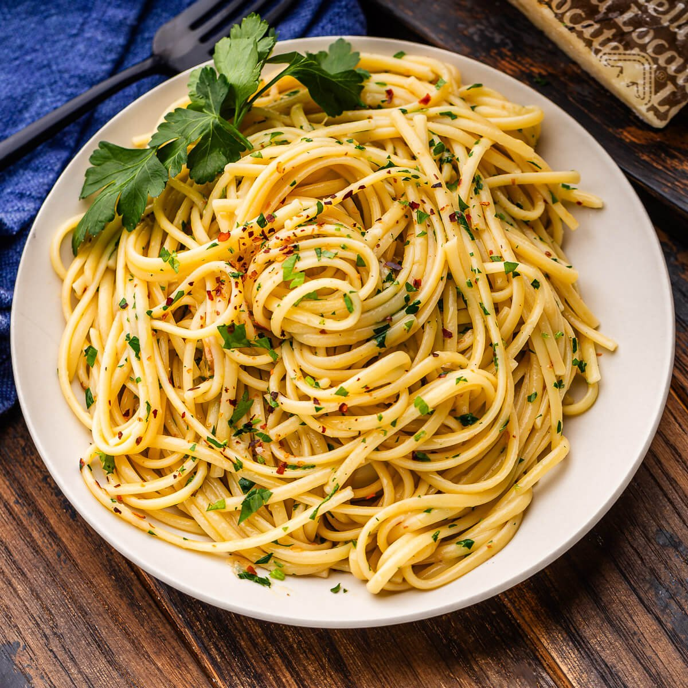
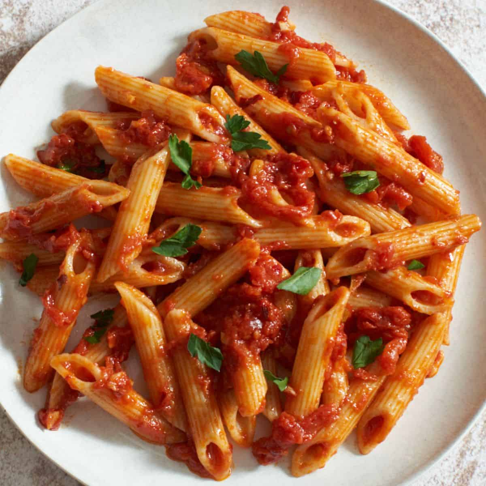

I love pasta as a dish, it's so veratile and it's really good if done well, but.. there is like a billion recipes to choose from. Which one should you choose? One of these:
Choose your Pasta:
Spaghetti Aglio Olio:
Aglio olio is just a great pasta even though it's not fancy, at all. It's litterally based on olive oil but it's still so damn good as easy.
Equipment:
A large pot/saucepan
A colander
Tongs
Ingredients:
125g(4 1/2 oz) spaghetti
30ml(1/8 cup) extra virgin olive oil
3 cloves of garlic
10g(1/3 oz) parsley
25g (7/8oz) parmesan cheese
salt and pepper to taste
Intructions:
Boil enough water for the pasta in a pot/saucepan and salt it like the sea
Meanwhile cut the garlic into thin slices
Grate the parmesan cheese
Cook the spghetti in the salted boiled water for 8 mins and strain it using a colander but leave a lil bit of pasta water for later
In a pan or pot, heat the olive oil, saute the garlic slices until aromatic, then add the pasta in and finally the pasta water and parsley after 3 mins. season it with salt and pepper to taste, sprinkle some parmesan on top, and your done!
feast😋🍝🍝
Penne all arrabbiata:
If you don't know, arrabbiata sauce is a really yum yum spicy tomato sauce, it brings to life the flavours of chilli and tomato and it's the best sauce pasta I know. For this recipe(serves 6) you can either make your own sauce or just used store bought ones, there are seperate intructions for the sauce.
Sauce:
Ingredients:
45ml(3 tbsp) extra virgin olive oil
1 clove of garlic
As much chilli/pepper as you like(a lot)
1 can of tomatoes
Some pepper
Mince the garlic then in a large skillet, combine oil, garlic, and pepper/chilli into the pan until lightly golden and slightly aromatic.
Add the canned tomatoes, and stir while applying heat until a very light simmer.
Pour your sauce into a bowl, and it's done!
The pasta part
Ingredients:
Some salt
450g(1 lbs) of penne pasta
60g(2 oz) of grated parm cheese
A handful of dried parsley
Intructions:
In a saucepan, boil water with salt, add the penne in until it just starts to become soft. Remove the pasta from the water(save a bit later though!).
Add the sauce into a skillet and add just a bit of that pasta water until a vigorous simmer. Cook, stirring and shaking the pan and adding more pasta water if needed. Add the pasta and continue to cook it until still chewy, around 2 mins.
Remove the pasta from the heat and add your parsley and parm cheese onto the pasta. Serve and EAT😋🍝🍝:)
Spaghetti alla carbonara:

Carbonara is probally like the most famous pasta type, or at least one of them, and for good reason, cuz it's gud. Now here's a recipe
Ingredients:
300g (11 oz) spaghetti
200g(7 oz) guanciale for fatty thick bacon
4 eggs
90g(7 oz) pecorino romano or parmesan
A lil black pepper
Some salt
Intructions:
Slice the guanciale / fatty bacon into thin stripz. In a frying pan or skillet, add the meat until it's golden brown and smells amazing
Remove the guanciale and place it on a plate for now, save the fat in the pan tho
In a large pot / saucepan, boil water and salt it like the sea, then add the spaghetti to the pot and cook it for 10 mins or just follow the intructions on the packet
Seperate 3 egg yolks in a little bowl. Then crack a whole egg into the yolks. Beat the eggs until completly combined and add a little black pepper into the egg and mix again.
Gradually add the cheese to the eggs. Mix and continue to add the cheese until you have a nice thick cream.
Put the pan back on medium low heat with the guanciale/bacon oil. Using tongs, add the pasta to the pan and stir.
Scoop some pasta water and add some right into the pan and mix it nicely
Place your pot with the pasta still inside the stove and rest your pan on top of the pot. The steam will provide good heat.
Add a splash more of pata water, and a handful of your crunchy guanciale.
Plate it and feast😋🍝🍝